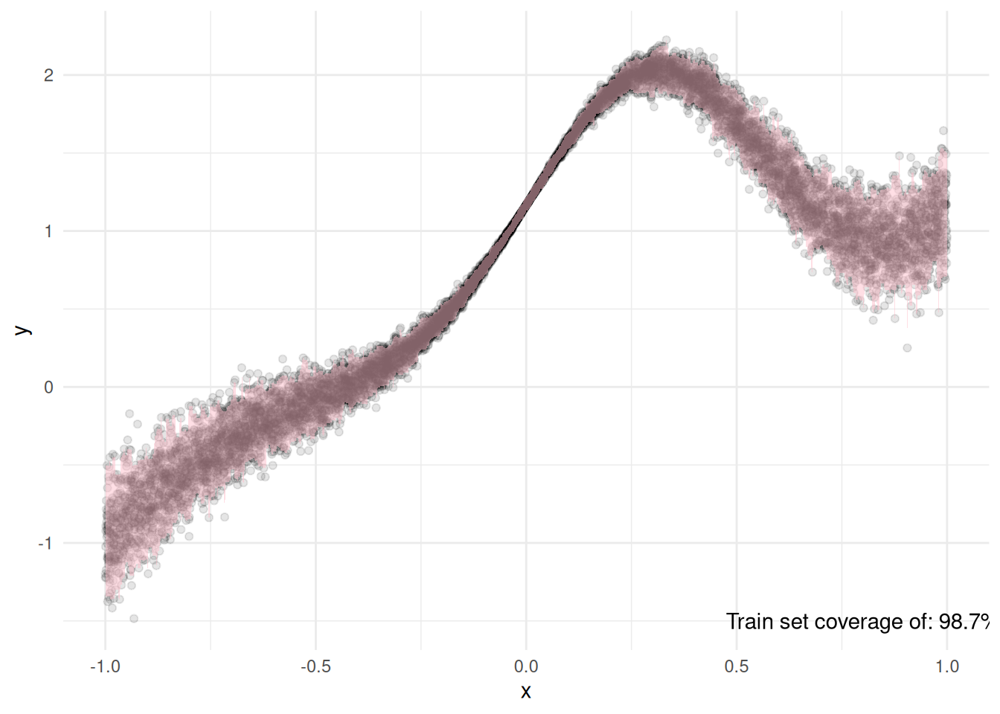

Code
library(dplyr)
library(quantregForest)
library(ggplot2)This is the third part of a small series to show how to implement Conformal Prediction intervals in R from scratch, without relying in frameworks (such as Tidymodels). In this particular case, we’ll use the quantregForest package for our Quantile intervals.
This particular case is based on a heteroscedastic regression problem, where we need an asymmetric interval with a 95% coverage guarantee, but we’ll skip the point estimator and goi straight for prediction regions.
The focus of this series is not on the complexity of the methods or models, but rather to exemplify how to implement conformal intervals with a specific guarantee.
Conformal Prediction (CP) is an uncertainty quantification framework or techniques used in Machine Learning problems where classical asymptotic theory does not hold too well due to the type of models being used. The most common use is split conformal prediction, where from our training data \(D\) we split it into \(D_1\) proper training data and \(D_2\) for calibration data.
The objective is to create an interval with an \(\alpha\) coverage level guarantee that is distribution-free, but instead of modelling a point-estimator type of model, we’ll create the intervals directly using Quantile Regression, which is a model focused on the conditional quantiles.
Some nomenclature to be consistent:
Training data: \(D_1\)
Calibration data: \(D_2\)
Residual: \(R_i\)
For this problem, we can use around 1000 data points from a calibration set (hence, the name split conformal prediction).
We’ll use the following libraries for this example:
library(dplyr)
library(quantregForest)
library(ggplot2)We’ll also create a function to simulate data. This function is taken from Tidymodel’s Conformal Prediction post, but we won’t be using any function from the Tidymodels framework.
make_variable_data <- function(n, std_dev = 1 / 5) {
tibble(x = runif(n, min = -1)) |>
mutate(
y = (x^3) + 2 * exp(-6 * (x - 0.3)^2),
y = y + rnorm(n, sd = std_dev * abs(x))
)
}
coverage <- function(y, lower, upper){
aux <- ifelse(y >= lower & y <= upper, 1 , 0)
sum(aux)/length(aux)
}I will pre-create our different sets: training, calibration, and test.
set.seed(1992)
train_variable_data <- make_variable_data(10000)
cal_variable_data <- make_variable_data(1000)
test_variable_data <- make_variable_data(10000)Our quantile regression random forest will be trained using the training data like this:
qrf <-
quantregForest::quantregForest(
train_variable_data[,1],
train_variable_data$y,
nodesize = 3, sampsize = 500)
train_quantiles <-
predict(qrf,
train_variable_data,
what = c(0.025, 0.975))
train_cov <-
coverage(train_variable_data$y,
train_quantiles[,1],
train_quantiles[,2])Next, we can see that our quantile regression looks good on our training data, and we also have a fairly high coverage. I was aiming for 95%, but it seems it’s close to 99%! Will it hold on our calibration set?

We can now fit our model to the calibration set, and we can check that our coverage is very close to 95%. Now, using real data it might not be this close to our expected coverage. It could be 90%, or even lower.
Still, the point of this is to learn, so we will Conformalize our intervals so that we can get proper coverage in the long run.
cal_quantiles <-
predict(qrf,
cal_variable_data,
what = c(0.025, 0.975))
cal_cov <-
coverage(cal_variable_data$y,
cal_quantiles[,1],
cal_quantiles[,2])First, we need to calculate the difference between our lower and upper intervals with respect to the calibration data and then get the maximum per row, which will give us the following set of calibration residuals: \(R_i = \max\left\{\hat f_{n_1}^{\alpha/2}(X_i) - Y_i, \ Y_i - \hat f_{n_1}^{1 - \alpha/2}(X_i) \right\}, \ i \in D_2\)
lower <- cal_quantiles[,1] - cal_variable_data$y
upper <- cal_variable_data$y - cal_quantiles[,2]
q_n2 <- (0.95 * (nrow(cal_variable_data)+1))/nrow(cal_quantiles)
R_i <- apply(cbind(upper,lower), 1, max)
q_n2 <- quantile(R_i, q_n2)Now, our new Conformalized Quantile Regression (CQR) set for future estimation is: \(\hat C(x) = \left[\hat f_{n_1}^{\alpha/2}(x) - \hat q_{n_2} , \ \hat f_{n_1}^{1 - \alpha/2}(x) + \hat q_{n_2} \right]\)
In practice, this just makes our lower interval have a lower value, and our upper interval a higher value. So it increases the spread.
Now we can calculate our prediction intervals in our test set, and check the coverage of our method.
# Fit to test data
test_quantiles <-
predict(qrf,
test_variable_data,
what = c(0.025, 0.975))
lower_bounds <- test_quantiles[,1] - q_n2
upper_bounds <- test_quantiles[,2] + q_n2
test_conformal_coverage <-
coverage(test_variable_data[,"y"],
lower_bounds,
upper_bounds)
test_regular_coverage <-
coverage(test_variable_data[,"y"],
test_quantiles[,1],
test_quantiles[,2])Now, this type of data is great for teaching but it also comes with a flaw. Despite the pattern being harder than a regular linear regression, it’s still fairly easy for a ML model to learn it, hence the regular coverage is fairly close to our pre-defined \(\alpha\) level. Despite this, we can see that using Conformal prediction we can guarantee that our intervals will have at least our \(\alpha\) level coverage.
# Plot the symmetric intervals
ggplot(aes(x, y), data = test_variable_data) +
geom_point(alpha = 1 / 15) +
geom_ribbon(aes(x = x,
ymin = lower_bounds,
ymax = upper_bounds),
alpha = 1/4,
fill = "pink") +
annotate("text",
x = 0.75,
y = -1.5,
label = paste("Regular Coverage of:",
scales::percent(test_regular_coverage,
0.01),
"\n",
"Conformal coverage of:",
scales::percent(test_conformal_coverage,
0.01)
)
)
In the end, using our test set of 10.000 observations, we can see that the coverage is actually at least 95 % using CQR even on the case of heteroscedastic data. This is fairly useful when we’re interested in prediction regions rather than a point estimator. Even then, we could’ve used the median as our point estimator instead of another model too if we wanted! It’s the beauty of Quantiles.
To reiterate. The idea of most conformal prediction methods is similar: to make post-hoc adjustments to our uncertainty in order to achieve a specific long-run coverage, which is firmly rooted in a frequentist interpretation of statistics.